9. Complex numbers
Cartesian form · polar form · roots · Argand loci
本页依据 9709 Mathematics 2026–2027 syllabus 3.9，覆盖 complex number 的 real part、imaginary part、modulus、argument、conjugate；Cartesian 与 polar form 的四则运算；real-coefficient polynomial 的 conjugate roots；Argand diagram、square roots 和 loci。
1. Core knowledge
Cartesian form and conjugate
设 z=x+iy，则
\operatorname{Re}z=x,\qquad \operatorname{Im}z=y,\qquad z^*=x-iy,
|z|=\sqrt{x^2+y^2},\qquad |z|^2=zz^*.
两个 complex numbers 相等，当且仅当 real parts 和 imaginary parts 分别相等。
Worked example · Note PDF p.3
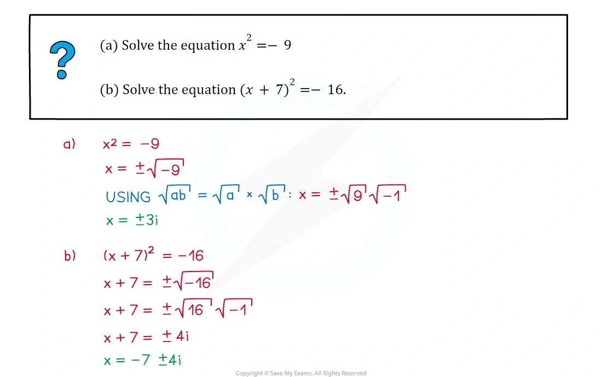
Worked example · Note PDF p.5
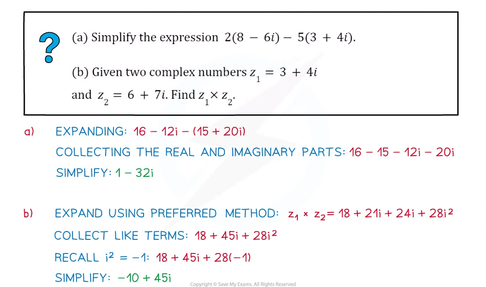
Multiplication and division in Cartesian form
(a+bi)(c+di)=(ac-bd)+(ad+bc)i.
除法乘以 denominator 的 conjugate：
\frac{a+bi}{c+di}=\frac{(a+bi)(c-di)}{c^2+d^2}.
Worked example · Note PDF p.7
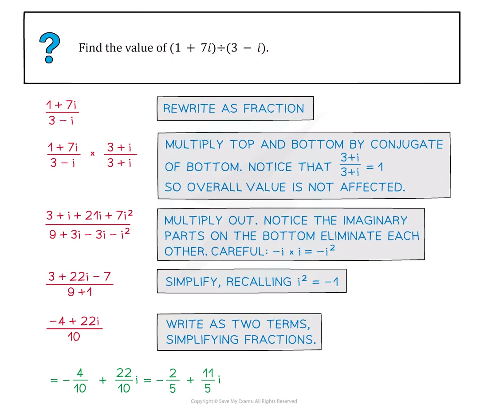
Worked example · Note PDF p.11
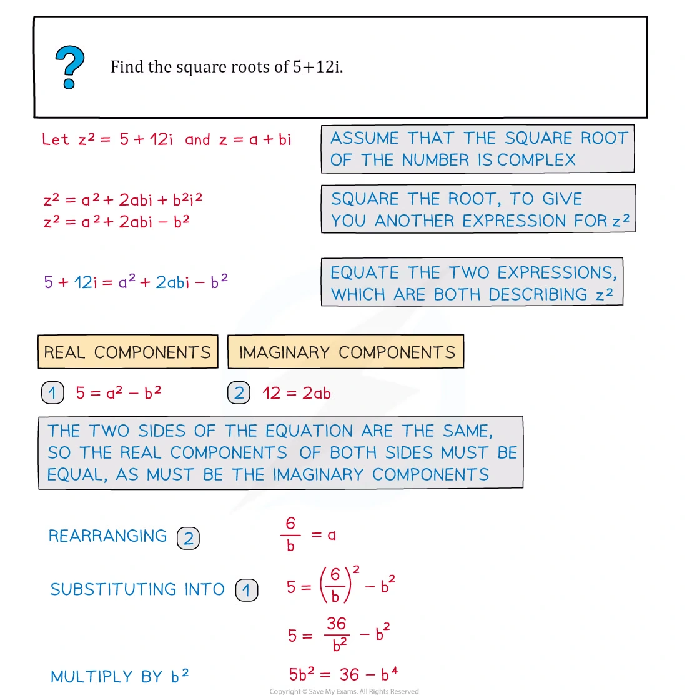
Polar form
z=r(\cos\theta+i\sin\theta)=re^{i\theta}, \qquad r=|z|,\quad \theta=\arg z.
在 polar form 中：
z_1z_2=r_1r_2e^{i(\theta_1+\theta_2)}, \qquad \frac{z_1}{z_2}=\frac{r_1}{r_2}e^{i(\theta_1-\theta_2)}.
argument 通常取 -\pi<\theta\le\pi，除非题目指定其他 interval。
Worked example · Note PDF p.19
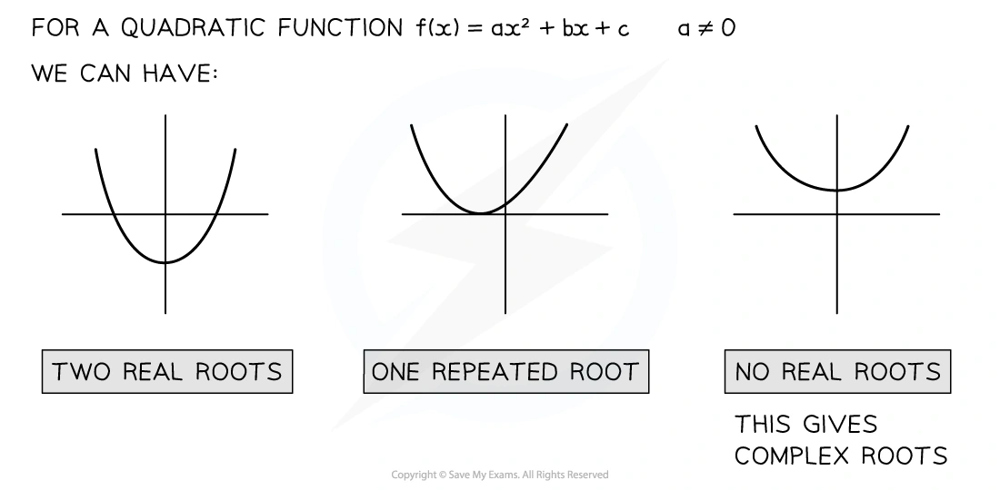
Worked example · Note PDF p.30
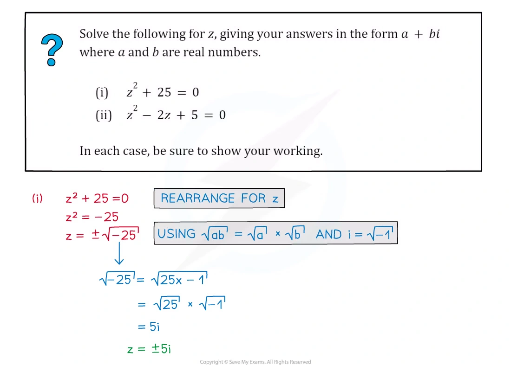
Argand loci and roots
若 z=x+iy，则
|z-(a+ib)|=r \Longleftrightarrow (x-a)^2+(y-b)^2=r^2,
是 centre (a,b)、radius r 的 circle。
若 polynomial 的 coefficients 全为 real，任何 non-real root z 都对应 conjugate root z^*。求 square roots 时设 w=a+ib，再比较 real and imaginary parts。
Worked example · Note PDF p.33
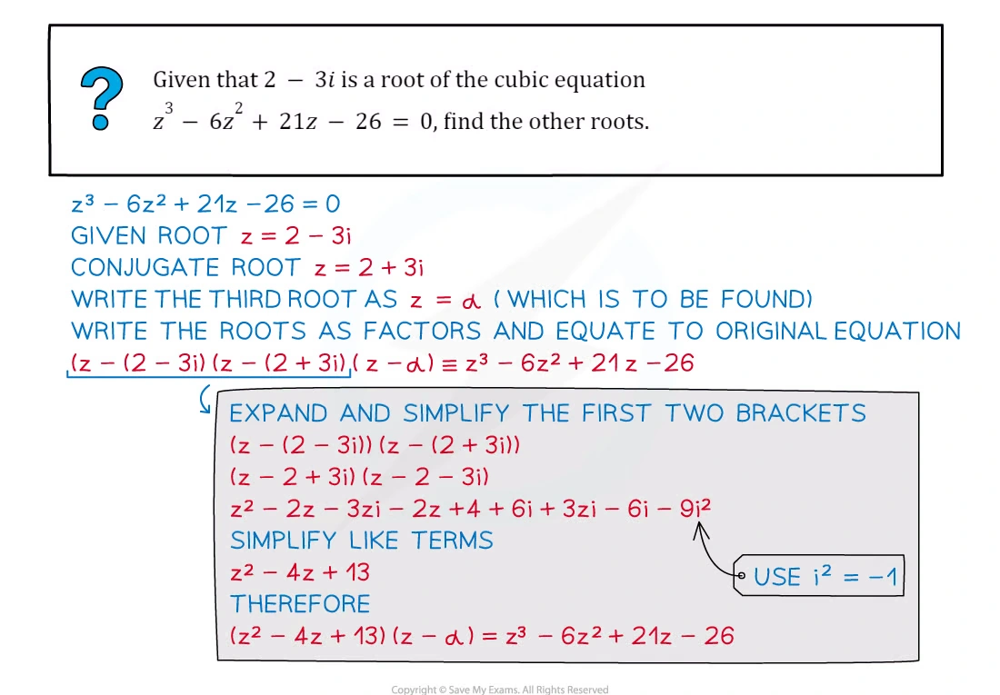
Worked example · Note PDF p.35
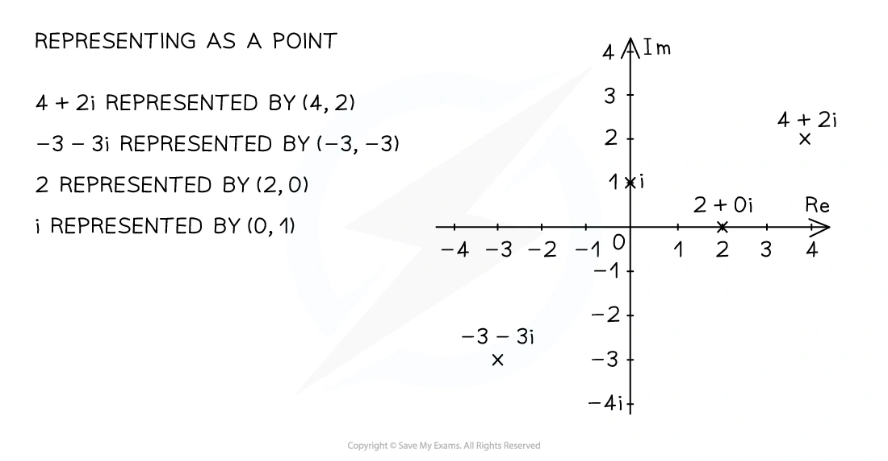
Worked example · Note PDF p.38
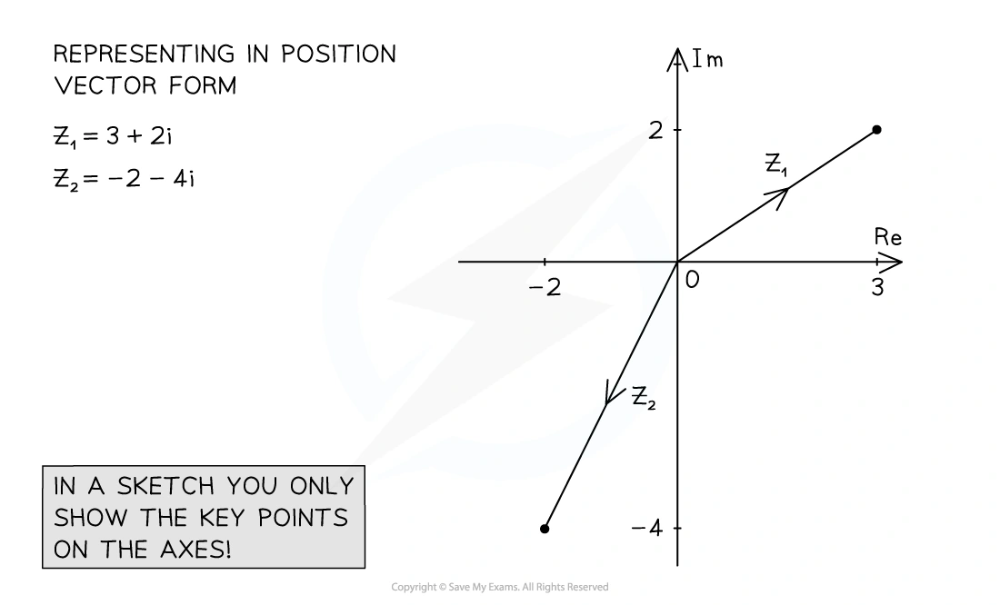
Worked example · Note PDF p.40
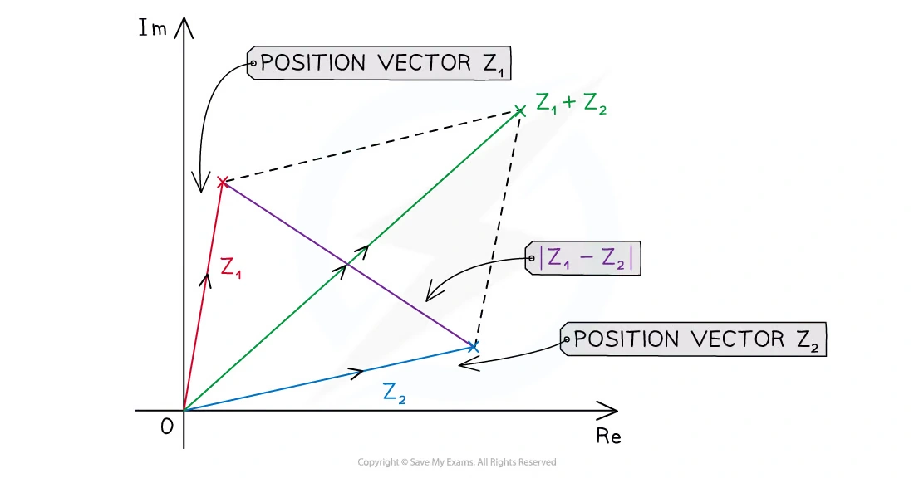
Worked example · Note PDF p.42
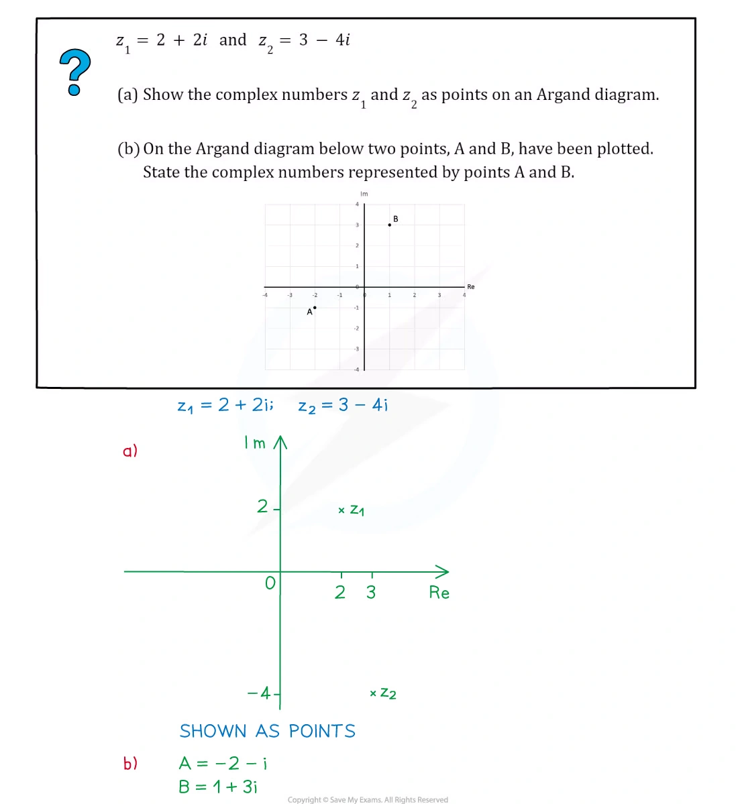
Worked example · Note PDF p.44
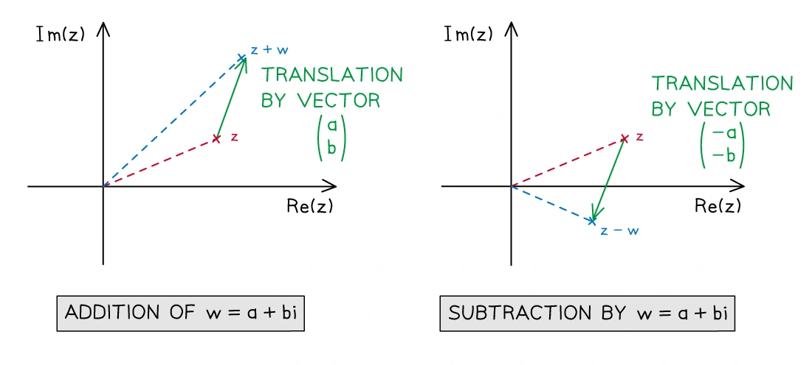
Worked example · Note PDF p.50
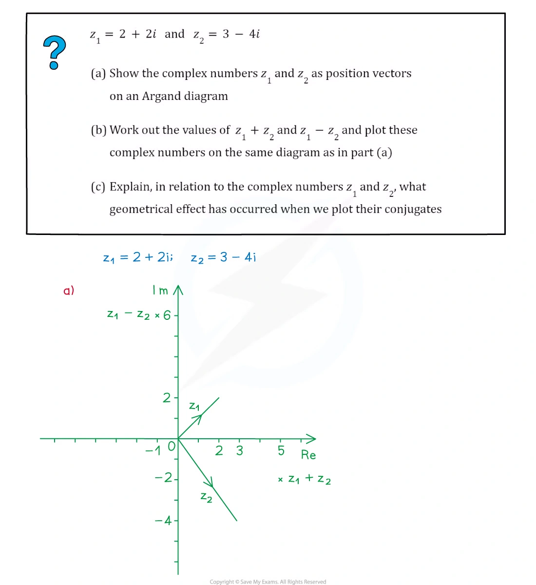
Worked example · Note PDF p.56
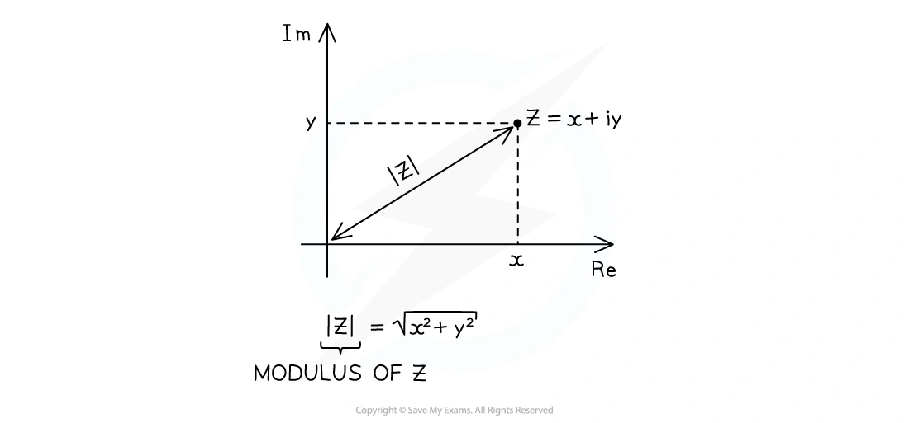
2. Paper 3 past-paper questions
以下 20 题保留 past paper 原题文字；只对 PDF 中的排版符号作 LaTeX 规范化。答案按 matching mark scheme 展开。
Question 1 · 9709/31/O/N/20 Q2
On a sketch of an Argand diagram, shade the region whose points represent complex numbers z satisfying the inequalities
|z|\ge2\quad\text{and}\quad |z-1+i|\le1.
[4]
Show detailed mark scheme answer
|z|\ge2 is the exterior of the circle centre (0,0) radius 2; |z-(1-i)|\le1 is the interior of the circle centre (1,-1) radius 1.
在 Argand diagram 上画两条边界：第一条为实线圆 |z|=2，第二条为实线圆 |z-1+i|=1；阴影取第二圆内部且在第一圆外部的交集。PastPaper/2020/2020/9709_w20_qp_31.pdf, Q2, and matching mark scheme.
Question 2 · 9709/32/M/J/20 Q8(a–b)
- Solve the equation
(1+2i)w+iw^*=3+5i.
Give your answer in the form x+iy, where x and y are real.
- On a sketch of an Argand diagram, shade the region whose points represent complex numbers z satisfying the inequalities
|z-2-2i|\le1\quad\text{and}\quad \arg(z-4i)\ge-\frac14\pi.
- Find the least value of \operatorname{Im}z for points in this region, giving your answer in an exact form. [4+4+2]
Show detailed mark scheme answer
Let w=x+iy, so w^*=x-iy. Then
(1+2i)(x+iy)+i(x-iy)=(x-y)+(3x+y)i.
Thus x-y=3 and 3x+y=5, giving x=2,y=-1 and
\boxed{w=2-i}.
The first locus is the circle centre (2,2) radius 1. The second inequality is the region on or above the ray from (0,4) with argument -\pi/4.
For the least imaginary part, the lower boundary of the circle meets this ray at
(x-2)^2+(4-x-2)^2=1 \Longrightarrow x=2+\frac1{\sqrt2},quad y=2-\frac1{\sqrt2}.
Therefore
\boxed{\min\operatorname{Im}z=2-\frac1{\sqrt2}}.PastPaper/2020/2020/9709-s20-qp-32.pdf, Q8(a–b), and matching mark scheme.
Question 3 · 9709/32/O/N/20 Q6(a–c)
The complex number u is defined by
u=\frac{7+i}{1-i}.
Express u in the form x+iy, where x and y are real.
Show on a sketch of an Argand diagram the points A, B and C representing u, 7+i and 1-i respectively.
By considering the arguments of 7+i and 1-i, show that
\tan^{-1}\frac43=\tan^{-1}\frac17+\frac14\pi.
[3+2+3]
Show detailed mark scheme answer
u=\frac{(7+i)(1+i)}{(1-i)(1+i)}=\frac{6+8i}{2}=\boxed{3+4i}.
The Argand points are A=(3,4), B=(7,1) and C=(1,-1).
Now
\arg u=\arg(7+i)-\arg(1-i)=\tan^{-1}\frac17-\left(-\frac14\pi\right).
Since u=3+4i, \arg u=\tan^{-1}(4/3), proving the identity.PastPaper/2020/2020/9709_w20_qp_32.pdf, Q6(a–c), and matching mark scheme.
Question 4 · 9709/32/F/M/21 Q8(a–d)
The complex numbers u and v are defined by u=-4+2i and v=3+i.
Find u/v in the form x+iy, where x and y are real.
Hence express u/v in the form re^{i\theta}, where r and \theta are exact.
In an Argand diagram, with origin O, the points A, B and C represent the complex numbers u, v and 2u+v respectively.
State fully the geometrical relationship between OA and BC.
Prove that angle AOB=\frac34\pi. [3+2+2+2]
Show detailed mark scheme answer
\frac uv=\frac{(-4+2i)(3-i)}{10}=\boxed{-1+i}.
Hence r=\sqrt2 and \theta=3\pi/4:
\boxed{\frac uv=\sqrt2e^{3\pi i/4}}.
Since \overrightarrow{BC}=(2u+v)-v=2u, BC is parallel to OA and has twice its length, in the same direction.
Finally,
u\cdot v=(-4)(3)+2(1)=-10, \quad |u||v|=\sqrt{20}\sqrt{10}=10\sqrt2.
Thus \cos\angle AOB=-1/\sqrt2, and the angle in (0,\pi) is \boxed{3\pi/4}.PastPaper/2021/2021/9709_m21_qp_32.pdf, Q8(a–d), and matching mark scheme.
Question 5 · 9709/32/M/J/21 Q2
On a sketch of an Argand diagram, shade the region whose points represent complex numbers z satisfying the inequalities
|z+1-i|\le1\quad\text{and}\quad \arg(z-1)\le\frac34\pi.
[4]
Show detailed mark scheme answer
The first inequality is the inside of the circle centre (-1,1) radius 1. The second is the region on the clockwise side of the ray from (1,0) with argument 3\pi/4.
画出两条 boundary，并阴影取两条件的交集；圆边界为实线，argument boundary 为从 (1,0) 出发的 ray。PastPaper/2021/2021/9709_s21_qp_32.pdf, Q2, and matching mark scheme.
Question 6 · 9709/32/M/J/21 Q5
The complex number u is given by
u=10-4\sqrt6 i.
Find the two square roots of u, giving your answers in the form a+ib, where a and b are real and exact. [5]
Show detailed mark scheme answer
Let a square root be a+ib. Comparing with (a+ib)^2 gives
a^2-b^2=10,\qquad 2ab=-4\sqrt6.
Also a^2+b^2=|u|=\sqrt{10^2+(4\sqrt6)^2}=14. Hence a^2=12 and b^2=2. The sign condition gives ab<0.
Therefore the two roots are
\boxed{2\sqrt3-\sqrt2 i},qquad \boxed{-2\sqrt3+\sqrt2 i}.PastPaper/2021/2021/9709_s21_qp_32.pdf, Q5, and matching mark scheme.
Question 7 · 9709/32/O/N/21 Q5(a–b)
- On a sketch of an Argand diagram, shade the region whose points represent complex numbers z satisfying the inequalities
|z-3-2i|\le1\quad\text{and}\quad \operatorname{Im}z\ge2.
- Find the greatest value of \arg z for points in the shaded region, giving your answer in degrees. [4+3]
Show detailed mark scheme answer
The region is the part of the circle centre (3,2) radius 1 above the line y=2.
The greatest argument is obtained by the upper tangent from the origin to the circle. If \alpha=\arg(3+2i), then
\alpha=\tan^{-1}\frac23,qquad \delta=\sin^{-1}\frac1{\sqrt{13}}.
Thus
\boxed{\arg z=\tan^{-1}\frac23+\sin^{-1}\frac1{\sqrt{13}}\approx49.8^\circ}.PastPaper/2021/2021/9709_w21_qp_32.pdf, Q5(a–b), and matching mark scheme.
Question 8 · 9709/32/F/M/22 Q6
Find the complex numbers w which satisfy the equation
w^2+2iw^*=1
and are such that \operatorname{Re}w\le0. Give your answers in the form x+iy, where x and y are real. [6]
Show detailed mark scheme answer
Let w=x+iy, w^*=x-iy. Then
w^2+2iw^*=(x^2-y^2+2y)+2x(y+1)i.
The imaginary part gives x=0 or y=-1.
If x=0, the real part gives (y-1)^2=0, so w=i. If y=-1, the real part gives x^2=4; the condition x\le0 gives x=-2.
Therefore
\boxed{w=i,\qquad w=-2-i}.PastPaper/2022/2022/9709_m22_qp_32.pdf, Q6, and matching mark scheme.
Question 9 · 9709/32/M/J/22 Q10(a–d)
The complex number -1+\sqrt7i is denoted by u. It is given that u is a root of the equation
2x^3+3x^2+14x+k=0,
where k is a real constant.
Find the value of k.
Find the other two roots of the equation.
On an Argand diagram, sketch the locus of points representing complex numbers z satisfying |z-u|=2.
Determine the greatest value of \arg z for points on this locus. [3+4+2+2]
Show detailed mark scheme answer
Substitution of u=-1+\sqrt7i gives k=-8. Since the coefficients are real, the conjugate -1-\sqrt7i is another root. By the sum of roots,
r+(-1+\sqrt7i)+(-1-\sqrt7i)=-\frac32,
so the third root is 1/2. Thus \boxed{k=-8} and the other roots are \boxed{-1-\sqrt7i,\ 1/2}.
The locus is the circle centre (-1,\sqrt7) radius 2. Its greatest argument is the upper tangent angle:
\boxed{\arg z=\pi-\tan^{-1}(\sqrt7)+\frac14\pi}.PastPaper/2022/2022/9709_s22_qp_32.pdf, Q10(a–d), and matching mark scheme.
Question 10 · 9709/33/M/J/22 Q5(a–c)
The complex number 3-i is denoted by u.
Show, on an Argand diagram with origin O, the points A, B and C representing the complex numbers u, u^* and u^*-u respectively. State the type of quadrilateral formed by the points O, A, B and C.
Express u^*/u in the form x+iy, where x and y are real.
By considering the argument of u^*/u, or otherwise, prove that
\tan^{-1}\frac34=2\tan^{-1}\frac13.
[3+3+2]
Show detailed mark scheme answer
The points are A=(3,-1), B=(3,1) and C=(0,2). Since \overrightarrow{BC}=(3,-1)=\overrightarrow{OA} and \overrightarrow{AB}=(0,2)=\overrightarrow{OC}, OABC is a parallelogram.
\frac{u^*}{u}=\frac{3+i}{3-i}=\frac{(3+i)^2}{10}=\boxed{\frac45+\frac35i}.
Now \arg(u^*/u)=2\tan^{-1}(1/3), while the Cartesian form has argument \tan^{-1}((3/5)/(4/5))=\tan^{-1}(3/4). Hence the identity.PastPaper/2022/2022/9709_s22_qp_33.pdf, Q5(a–c), and matching mark scheme.
Question 11 · 9709/31/O/N/22 Q2
On a sketch of an Argand diagram shade the region whose points represent complex numbers z satisfying the inequalities
|z|\le3,\qquad \operatorname{Re}z\ge-2,\qquad \frac14\pi\le\arg z\le\pi.
[4]
Show detailed mark scheme answer
Draw the circle |z|=3, the vertical line x=-2, and the two rays \arg z=\pi/4 and \arg z=\pi. Shade the part inside the circle, to the right of x=-2, and between the two rays.PastPaper/2022/2022/9709_w22_qp_31.pdf, Q2, and matching mark scheme.
Question 12 · 9709/32/O/N/22 Q5(a–c)
- Solve the equation
z^2-6iz-12=0,
giving the answers in the form x+iy, where x and y are real and exact.
On a sketch of an Argand diagram with origin O, show points A and B representing the roots.
Find the exact modulus and argument of each root. [3+1+3]
Show detailed mark scheme answer
z=\frac{6i\pm\sqrt{(-6i)^2+48}}2=\frac{6i\pm\sqrt{12}}2 =\boxed{\sqrt3+3i,\ -\sqrt3+3i}.
Both roots have modulus
|z|=\sqrt{3+9}=\boxed{2\sqrt3}.
The arguments are respectively \boxed{\pi/3} and \boxed{2\pi/3}.PastPaper/2022/2022/9709_w22_qp_32.pdf, Q5(a–c), and matching mark scheme.
Question 13 · 9709/33/O/N/22 Q5(a–b)
- On a sketch of an Argand diagram, shade the region whose points represent complex numbers z satisfying the inequalities
|z+2|\le2\quad\text{and}\quad \operatorname{Im}z\ge1.
- Find the greatest value of \arg z for points in the shaded region. [4+2]
Show detailed mark scheme answer
The region is the part of the circle centre (-2,0) radius 2 above y=1. The greatest argument occurs at the left intersection with y=1:
x=-2-\sqrt3.
Therefore
\boxed{\max\arg z=\pi-\tan^{-1}\left(\frac1{2+\sqrt3}\right)=\frac{11\pi}{12}}.PastPaper/2022/2022/9709_w22_qp_33.pdf, Q5(a–b), and matching mark scheme.
Question 14 · 9709/32/F/M/23 Q2(a–b)
- On an Argand diagram, shade the region whose points represent complex numbers z satisfying the inequalities
-\frac13\pi\le\arg(z-1-2i)\le\frac13\pi \quad\text{and}\quad \operatorname{Re}z\le3.
- Calculate the least value of \arg z for points in the region from (a). Give your answer in radians correct to 3 decimal places. [3+2]
Show detailed mark scheme answer
The first condition is the wedge with vertex (1,2) between the rays at angles \pm\pi/3; the second condition is the half-plane x\le3.
The least argument is reached where the lower ray meets x=3:
y=2-2\sqrt3.
Therefore
\boxed{\min\arg z=\tan^{-1}\left(\frac{2-2\sqrt3}{3}\right)\approx-0.454\text{ rad}}.PastPaper/2023/2023/9709_m23_qp_32.pdf, Q2(a–b), and matching mark scheme.
Question 15 · 9709/32/M/J/23 Q3(a–b)
- On an Argand diagram, sketch the locus of points representing complex numbers z satisfying
|z+3-2i|=2.
- Find the least value of |z| for points on this locus, giving your answer in an exact form. [2+2]
Show detailed mark scheme answer
The locus is the circle centre (-3,2) radius 2. The distance from the origin to the centre is \sqrt{13}, so the least distance from the origin to the circle is
\boxed{\sqrt{13}-2}.PastPaper/2023/2023/9709_s23_qp_32.pdf, Q3(a–b), and matching mark scheme.
Question 16 · 9709/33/M/J/23 Q3
On a sketch of an Argand diagram, shade the region whose points represent complex numbers z satisfying the inequalities
|z-3-i|\le3\quad\text{and}\quad |z|\ge|z-4i|.
[4]
Show detailed mark scheme answer
The first inequality is the disc centre (3,1) radius 3. For the second,
x^2+y^2\ge x^2+(y-4)^2 \Longleftrightarrow y\ge2.
Shade the part of that disc lying on or above the horizontal line y=2.PastPaper/2023/2023/9709_s23_qp_33.pdf, Q3, and matching mark scheme.
Question 17 · 9709/31/O/N/21 Q10(a–d)
The complex number 1+2i is denoted by u. The polynomial 2x^3+ax^2+4x+b, where a and b are real constants, is denoted by p(x). It is given that u is a root of the equation p(x)=0.
Find the values of a and b.
State a second complex root of this equation.
Find the real factors of p(x).
- On a sketch of an Argand diagram, shade the region whose points represent complex numbers z satisfying |z-u|\le5 and \arg z\le\frac14\pi.
- Find the least value of \operatorname{Im}z. Give your answer in an exact form. [4+1+2+4+1]
Show detailed mark scheme answer
With u=1+2i, u^2=-3+4i and u^3=-11-2i. Substitution gives
(-22-4i)+a(-3+4i)+(4+8i)+b=0.
Comparing parts gives \boxed{a=-1,b=15}. The conjugate root is \boxed{1-2i}, and
p(x)=(x^2-2x+5)(2x+3).
The locus is the disc centre (1,2) radius 5, restricted by \arg z\le\pi/4. Its lowest point (1,-3) is allowed, so
\boxed{\min\operatorname{Im}z=-3}.PastPaper/2021/2021/9709_w21_qp_31.pdf, Q10(a–d), and matching mark scheme.
Question 18 · 9709/31/O/N/23 Q4(a–b)
The complex number u is defined by
u=\frac{3+2i}{a-5i},
where a is real.
Express u in the Cartesian form x+iy, where x and y are in terms of a.
Given that \arg u=\frac14\pi, find the value of a. [3+2]
Show detailed mark scheme answer
u=\frac{(3+2i)(a+5i)}{a^2+25} =\frac{3a-10+(2a+15)i}{a^2+25}.
For argument \pi/4, the real and imaginary parts are equal and positive:
3a-10=2a+15\Longrightarrow\boxed{a=25}.PastPaper/2023/2023/9709_w23_qp_31.pdf, Q4(a–b), and matching mark scheme.
Question 19 · 9709/31/M/J/24 Q7(a–b)
- On a single Argand diagram sketch the loci given by the equations
|z-3+2i|=2
and
|w-3+2i|=|w+3-4i|,
where z and w are complex numbers.
- Hence find the least value of |z-w| for points on these loci. Give your answer in an exact form. [4+2]
Show detailed mark scheme answer
The z locus is the circle centre (3,-2) radius 2. The w locus is the perpendicular bisector of the points (3,-2) and (-3,4), hence
y=x+1.
The distance from the circle centre (3,-2) to this line is
\frac{|{-2}-3-1|}{\sqrt2}=3\sqrt2.
Subtract the circle radius to obtain
\boxed{\min|z-w|=3\sqrt2-2}.PastPaper/2024/2024/A-Level-CAIE数学QP-202406-Mathematics-P31-A-Level题库大全小程序.pdf, Q7(a–b), and matching mark scheme.
Question 20 · 9709/32/O/N/24 Q5(a–b)
- The complex number u is given by
u=\frac{\left(\cos\frac17\pi+i\sin\frac17\pi\right)^4}{\cos\frac17\pi-i\sin\frac17\pi}.
Find the exact value of \arg u.
- The complex numbers u and u^* are plotted on an Argand diagram. Describe the single geometrical transformation that maps u onto u^* and state the exact value of \arg u^*. [2+2]
Show detailed mark scheme answer
Using polar form,
u=\frac{e^{4\pi i/7}}{e^{-\pi i/7}}=e^{5\pi i/7}.
Therefore \boxed{\arg u=5\pi/7}. Conjugation reflects a point in the real axis, so u^*=e^{-5\pi i/7} and
\boxed{\arg u^*=-5\pi/7}.PastPaper/2024/2024/A-Level-CAIE数学QP-202410-Mathematics-P32-A-Level题库大全小程序.pdf, Q5(a–b), and matching mark scheme.
Exam checklist
- Cartesian division 要乘以 denominator 的 conjugate。
- 求 argument 时先判断 quadrant，再决定 inverse-tangent 的 branch。
- Real-coefficient polynomial 出现 non-real root 时，要立即写出 conjugate root。
- Argand loci 先翻译成 circle、line、ray 或 half-plane，再处理交集。
- Square roots 要比较 real and imaginary parts，并保留两个 roots。